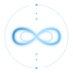
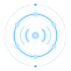

Group Experiences
Humans have always gathered for ritual, movement, celebration, grief, initiation and transformation.

Breath of Becoming
A deep breathwork journey through expression, release, wholeness and completion.
Conscious Dance Journeys
A primal, non-verbal journey through movement, emotion, connection and celebration, returning to stillness.

Listening Temples
Sharing circles devoted to listening as a sacred practice.
Design & Curation
When people are being invited into vulnerability, intensity or their edges, the quality of the container matters.
- Design
- Building a gathering from the ground up around what it is meant to make possible.
- Curation
- Bringing together the right facilitators, healers, artists, musicians, coaches and other elements into one coherent whole.
Collaboration & Guest Facilitation
I’m open to creating with people when there is alignment in values, intention and way of working.
Clear Roles · Trust · Reciprocity · Integrity
Co-creation
Developing something together around a shared purpose, combining perspectives, skills, people and resources.
Guest FacilitationBringing a relevant part of my work into a retreat, gathering, programme or event.
This may include breathwork, conscious dance, listening spaces, 1:1 support, bodywork or another appropriate part of my work.